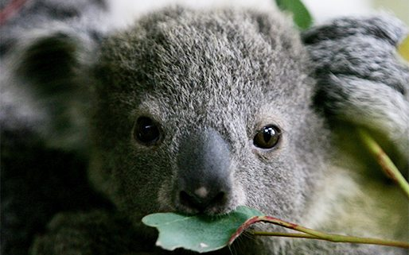

Some Quick Facts About Koalas
Koalas aren't bears as many people are led to believe. They aren't even related to bears. The koala is related to the kangaroo and the wombat. The koala is a marsupial mammal. The reason the koala is called a koala bear is because the koala looks like a teddy bear.
The koala's scientific name is Phasclarctos Cinereus.
Now there are only 2,000 to 8,000 koalas in the wild! Although not officially classified as endangered, the population of Australian koalas has dropped by 90% in less than a decade. This is due to the destruction of the koala's natural habitat, a narrow crescent on the eastern coast of Australia.